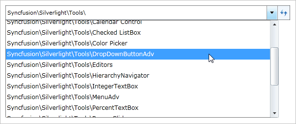
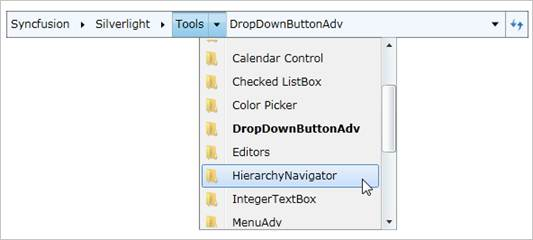

An item can be selected by rolling the mouse over it. The highlight that appears on the rolled over item helps identify the item that is currently selected. You can click next to an item to view a navigation pop-up window.
The mouse wheel can be used to scroll a vertical scroll bar that is enabled in the History or Navigation pop-up control to view the full content.

Figure 574: History popup

Figure 575: Navigation popup items
The mouse can be rolled over a Hierarchy Navigator item to view a pop-up (without clicking the item) even when there is a pop-up displayed for another item.